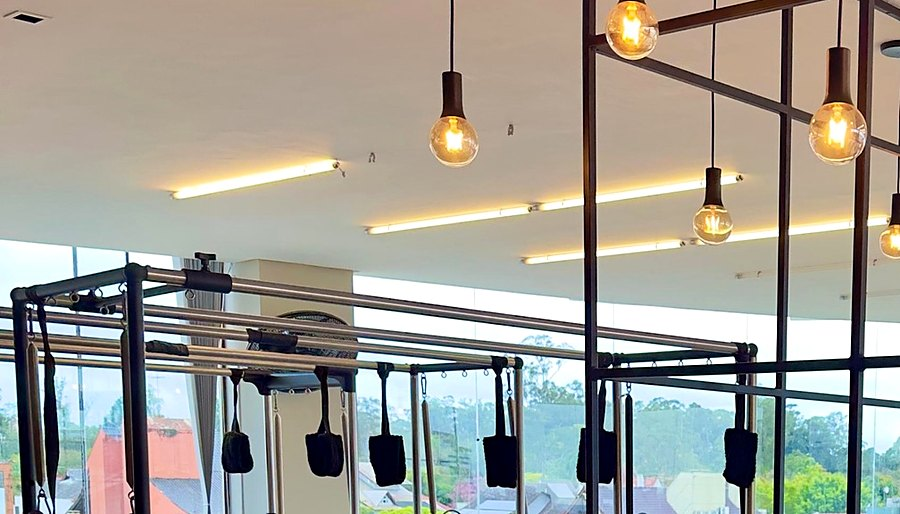
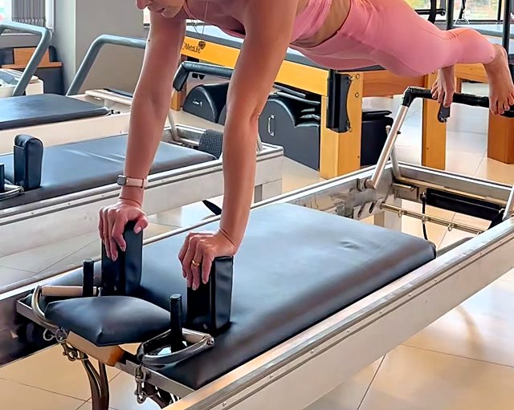
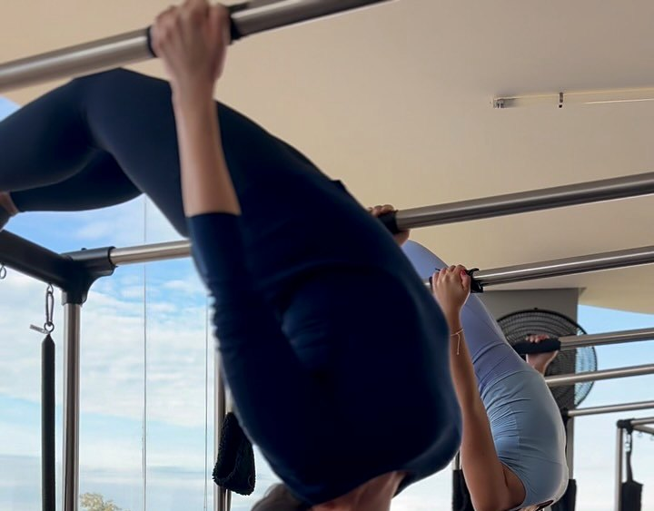
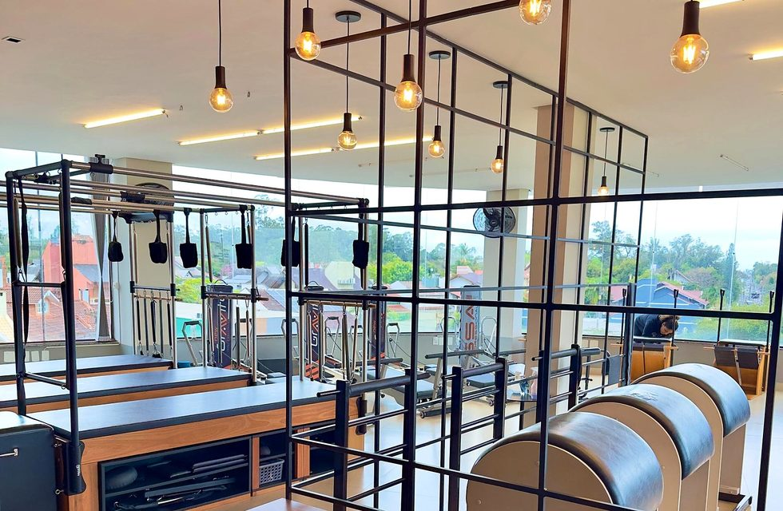
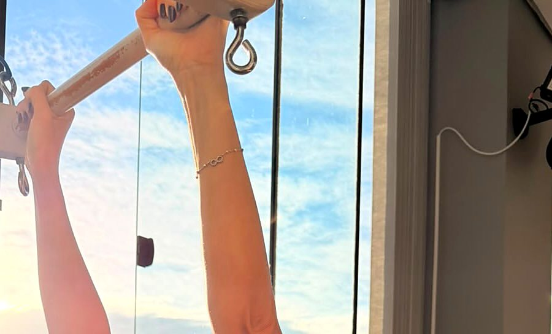
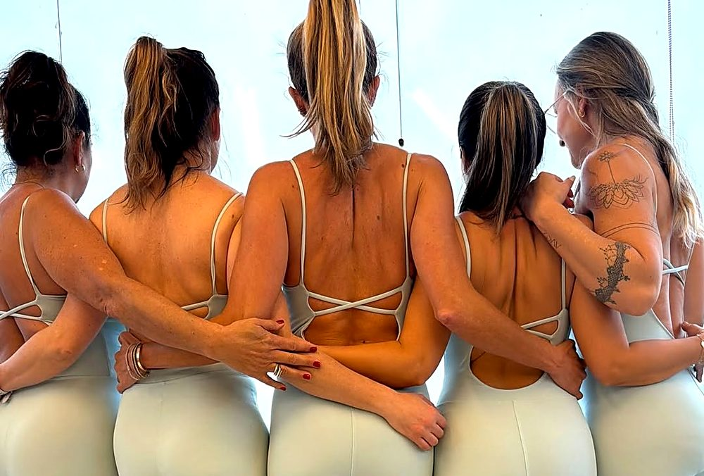

05Cadillacs PrópriosEquipamento individual completo. Todas treinam simultaneamente.
Até 5Alunas por HorárioAtenção e correção postural constante durante os 60 minutos.
100%Condução FisioterapêuticaOlhar clínico individualizado com Morgana Stein em sala.
202Sala na Dona RafaelaBairro Marechal Rondon, Canoas. Luz natural e tranquilidade.
HEAVEN
A Filosofia do Movimento
“Quem disse que Pilates é só para idoso?
Aqui a gente constrói força, controle de core e resistência real em cada movimento.”
No Pilates, não basta fazer força: é preciso saber dosá-la com precisão neuromuscular. Cada detalhe importa: respiração, alinhamento axial e a condução atenta de quem entende a biomecânica da coluna.
Condução de Morgana Stein · Fisioterapeuta Responsável
Aparelhagem Própria Exclusiva
A engenharia do Cadillac: cinco unidades completas na sala 202.
Toque nos pontos brilhantes do aparelho para compreender a função biomecânica de cada componente regulado por Morgana Stein.

SPEC 01Descompressão
Trapézio Aéreo & Alças de Couro
Permite a suspensão do peso corporal em gravidade assistida. Abre espaço entre as vértebras e descomprime o nervo ciático sem qualquer impacto articular.
SPEC 02Mobilidade Espinhal
Barra Torre de Ajuste Milimétrico
Conduzida pelas mãos da fisioterapeuta. Articula vértebra por vértebra, restabelecendo a curvatura fisiológica natural da coluna e a flexibilidade torácica.
SPEC 03Controle de Carga
Molas com Calibração Biomecânica
5 graus de tensão progressiva. A resistência não sobrecarrega tendões: ela recruta o músculo no momento exato e desafia a estabilidade do transverso abdominal.
SPEC 04Foco & Silêncio
Chassi Maciço Antirruído
Estabilidade absoluta durante todos os 60 minutos de aula. Sem ruídos metálicos ou vibração de esteiras. Um ambiente calmo propício para a respiração e concentração.
O Atelier Biomecânico
O corpo passa pelo chão antes de subir na torre.
Deslize horizontalmente pelas estações de treino do estúdio na sala 202.
01 / 06
01 · Fundação
Mat (Solo)
O Solo
O controle do próprio peso sem auxílio de molas. Desperta a musculatura profunda do centro (powerhouse) e o ritmo diafragmático.
Foco BiomecânicoEstabilidade de Core

02 · O Carrinho
Reformer
O carrinho deslizante e a resistência gradual das molas guiam o movimento onde falta mobilidade e desafiam onde sobra compensação.
Foco BiomecânicoFluidez & Alinhamento
03 · A Torre
Cadillac (5 Unidades)
O aparelho mais completo do método original. Permite exercícios aéreos, tração de coluna e suspensão com máxima segurança.
Foco BiomecânicoDescompressão & Força

04 · Calibração
Molas de Precisão
Barras articuladas e molas de diversas intensidades ajustadas milimetricamente para o objetivo clínico de cada aluna.
Foco BiomecânicoAmplitude Articular

05 · O Espaço
Sala 202
A esquina do segundo andar: janelas contínuas trazendo luz natural durante todas as aulas do dia, arejado e silencioso.
LocalizaçãoRua Dona Rafaela, 444

06 · Atmosfera
Pedacinho de Céu
A tranquilidade necessária para silenciar a pressa e focar totalmente no alinhamento da coluna e na respiração.
SensaçãoBem-Estar Integral
A Atmosfera
Sala 202,
segundo andar. Luz natural que acolhe.
O estúdio ocupa a esquina do segundo andar na Rua Dona Rafaela, 444 — Marechal Rondon, Canoas.
Janelas amplas e contínuas banham os Cadillacs com luz do dia, criando um ambiente arejado e silencioso onde a mente desacelera e o corpo consegue se concentrar na precisão de cada respiração.
“Bem-vindos ao nosso pedacinho de céu.”
A sensação de treinar com vista aberta para a copa das árvores de Canoas.
Salão amplo com os cinco Cadillacs alinhados sob luz natural.Tranquilidade para focar no movimento.Molas calibradas para cada biomecânica.
Biomecânica Aplicada
O que acontece com a sua coluna quando você deita no Cadillac.
A diferença anatômica entre a rotina comum comprimida e o alinhamento axial conduzido por uma fisioterapeuta.
Rotina Sedentária & Estresse
Compressão Contínua
Horas sentada ao computador e uso contínuo de celular produzem encurtamento anterior e sobrecarga discal.
Discos L4-L5 sob pressão: Dor lombar persistente e pinçamento ciático ao final da tarde.
Ombros caídos à frente: Tensão nos trapézios, rigidez cervical e dores de cabeça tensionais.
Respiração curta e apical: Ansiedade corporal e ausência de estabilização do assoalho pélvico.
Sala 202 · Heaven Pilates
Descompressão & Força de Core
A tração mecânica das molas aliada à correção tátil restaura o espaço articular e o tônus funcional.
Abertura de espaço intervertebral: Alívio imediato da queimação lombar por tração axial controlada.
Escápulas encaixadas: Peitoral aberto, postura ereta espontânea sem rigidez forçada.
Powerhouse ativo: Transverso abdominal e musculatura profunda protegendo cada passo do seu dia.
A Sessão de 60 Minutos
Como a aula acontece: o ritual em 4 compassos.
Você não entra em uma esteira nem pega uma ficha genérica. Cada sessão é uma experiência com início, meio e desfecho guiada individualmente por fisioterapeuta.
00 – 10 MINI
Triagem & Respiração
Morgana ouve como seu corpo amanheceu hoje: pontos de tensão, dores nas costas ou cansaço acumulado para calibrar a intensidade exata da aula.
Foco Clínico: Escuta individual e estabilização diafragmática inicial.
10 – 25 MINII
Fundamento no Mat
Ativação de assoalho pélvico, transverso do abdômen e mobilidade escapular no solo, acordando a musculatura profunda antes dos aparelhos.
Foco Clínico: Conexão neuromuscular do powerhouse sem sobrecarga.
25 – 50 MINIII
Força nos Aparelhos
Série progressiva no Reformer e nos Cadillacs exclusivos. A resistência das molas desafia o tônus e descomprime as articulações com zero impacto.
Foco Clínico: Tração vertebral assistida e ganho de força articular.
50 – 60 MINIV
Flow & Integração
Alongamento assistido, liberação miofascial e respiração final. Você sai da sala 202 com a postura ereta e a mente visivelmente serena.
Foco Clínico: Alinhamento axial consolidado e sensação imediata de leveza.
Transformação Biomecânica
A sensação vem primeiro. A explicação vem depois.
Não é apenas sobre estética: é sobre autonomia motora e longevidade sem dores para o cotidiano.
Alívio & Descompressão
“Aquela dor na lombar já não me incomoda ao acordar.”
Exercícios de tração axial e mobilidade que criam espaço entre as vértebras e aliviam pressões sobre o ciático e cervical.
Consciência Postural
“A postura melhora naturalmente no trabalho.”
Fortalecimento profundo de centro. Você passa a sentar, caminhar e dirigir com os ombros encaixados sem ter que forçar uma rigidez artificial.
Controle & Tônus
“Músculos mais firmes e movimentos muito mais leves.”
No Pilates, força é precisão. O corpo ganha definição sem hipertrofia agressiva, respeitando as curvas naturais da anatomia feminina.
Liberdade Diária
“Subir escadas e carregar peso sem medo de travar.”
A recuperação da confiança no próprio corpo: brincar com os filhos, viajar e praticar esportes com flexibilidade e estabilidade articular.

Comunidade Acolhedora
Ninguém treina sozinha por aqui.
“É sobre encontrar apoio no olhar da amiga ao lado. É sobre rir no meio do exercício. É sobre motivar e ser motivada. É sobre sair da aula mais leve por dentro, não só por fora.”
Na sala 202, o ambiente não tem julgamentos nem competições de espelho. São no máximo 5 alunas por horário compartilhando conquistas diárias de saúde e mobilidade.
Responsabilidade Técnica
Morgana Stein
Fisioterapeuta
Instrutora Certificada de Pilates
Especialista em Mobility Flow
Com presença integral durante toda a aula, Morgana não apenas passa exercícios: ela calibra a carga das molas, corrige ângulos de escápula e alinha a pelve com a precisão e o olhar clínico de uma fisioterapeuta.
Idealizadora do Heaven Pilates em Canoas e facilitadora de workshops de consciência corporal e mobilidade funcional.
Selecione seu objetivo principal e descubra o direcionamento que Morgana Stein prepara para o seu primeiro contato.
Passo 1 · Seu Objetivo Principal
O que seu corpo mais pede neste momento?
Passo 2 · Sua Experiência
Você já praticou Pilates em aparelhos antes?
DIRECIONAMENTO NA SALA 202
Protocolo de Descompressão Vertebral
Morgana iniciará com avaliação da amplitude da sua coluna no Mat, avançando para tração axial suave nas molas do Cadillac. Sem impacto articular e com atenção 100% individualizada em turma de até 5 alunas.
Nunca pratiquei Pilates. É possível começar do zero absoluto?+
Sim. A progressão começa nos fundamentos do solo (Mat) e avança para os aparelhos no ritmo exato das suas articulações. Com no máximo 5 alunos por horário, Morgana ajusta cada exercício para o seu nível.
Tenho hérnia de disco, dores no ciático ou lesões. Posso fazer?+
Sim, e é justamente o cenário mais indicado. Como o estúdio é conduzido por fisioterapeuta, seus exames e limitações são levados em conta desde o primeiro minuto para que nenhum movimento cause sobrecarga perigosa.
O Pilates trabalha força real ou é apenas alongamento?+
O método constrói força profunda de estabilização articular, abdômen e glúteos. A resistência das molas dos Cadillacs e Reformers impõe um desafio neuromuscular intenso, sem o impacto articular da musculação tradicional.
Como funciona a divisão dos aparelhos durante a aula?+
Como o Heaven possui 5 Cadillacs próprios para no máximo 5 alunas simultâneas, não há revezamento nem espera: cada aluna treina no seu próprio aparelho durante a sessão inteira.
Como faço para agendar minha aula e conhecer a sala 202?+
Basta tocar no botão de WhatsApp (51) 99420-0175. Combinamos um horário conveniente e esclarecemos qualquer dúvida sobre sua condição física.
A Primeira Aula
Começa com uma conversa sincera sobre o seu corpo.
Venha sentir o conforto de treinar em um estúdio arejado, com a atenção individual de uma fisioterapeuta e aparelhagem própria na sala 202.